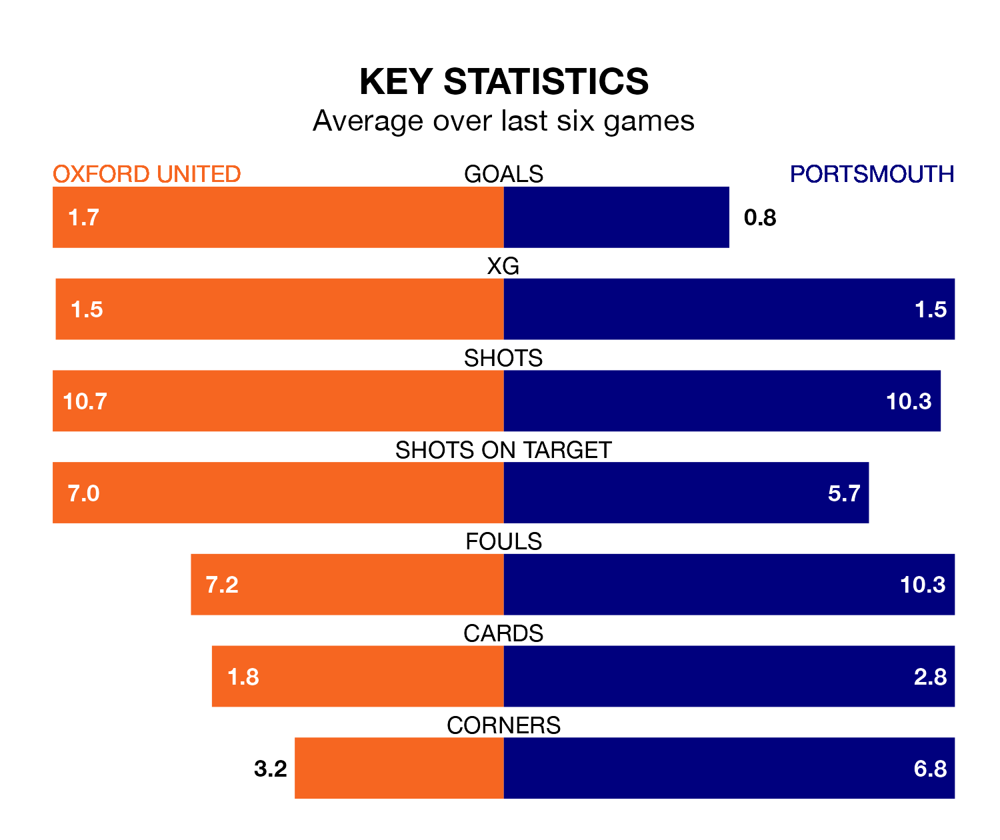

Portsmouth travel to Oxford United on late Tuesday in EFL League One.
The visitors come into the game on the back of a win in their last match, having beaten Port Vale 1-0 away, with a goal from Colby Bishop.
The Us, meanwhile, lost their last match, 3-1 against Bristol Rovers, with their goal scored by Mark Thomas Harris.
Portsmouth are top of the table after 29 games, of which they have won 17 and drawn eight, earning 59 points.
Oxford are six places behind Pompey in seventh, with 15 wins and four draws putting them on 49 points.
With Will Norris between the sticks, the visitors can rely on one of the league's safest pair of hands. He has kept 14 clean sheets in his 29 appearances this season, and no 'keeper has prevented the opposition scoring more often in EFL League One.
In United's net, James Beadle has seven clean sheets in 25 games. He has conceded a goal every 90 minutes, 30% more often than the 113 minutes between goals for Norris.
With 46 goals in 28 games so far this season, the Us are scoring more than average in the league with 1.6 goals per game. And they are conceding fewer than average, letting in 34 goals at a rate of 1.2 per game.
Portsmouth are also above average scorers, with 1.5 goals per game, compared to a league average of 1.3. They have conceded 0.9 goals per game.
In the last 10 years, Oxford and Portsmouth have played each other on 16 occasions. They won four each, and they drew eight times.
On average, the Us scored 1.3 goals and Pompey 1.4 in those matches.
Their last meeting was on April 18, when they played out a 1-1 draw.
The home team are in mixed form in EFL League One, with three wins and three losses from their last six games.
With three wins and a draw over that period, Portsmouth's form is slightly better – they have taken 10 points from 18, compared to Oxford's nine.
Updated: 10:03 (UTC), 30/01/24